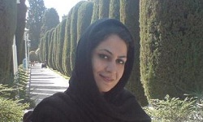
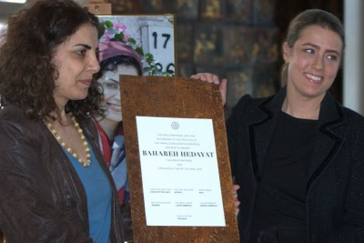

پذيرش > تریبون > گزارش كمپين > گزارشی از اهدای جایزه شجاعت به بهاره هدایت


 گزارشی از اهدای جایزه شجاعت به بهاره هدایت گزارشی از اهدای جایزه شجاعت به بهاره هدایت
29 فروردین 1391 - - نسخه قابل چاپ

تغییر برای برابری - مراسم اهدای نخستین جایزه بنیاد هارالد ادلستام به بهاره هدایت، 16 اپریل (28 فروردین) برابر با سالروز درگذشت هارالد ادلستام در تالار ریدارهوست استکهلم سوئد و بدون حضور برنده آن برگزار شد. در ابتدای این مراسم کارولین ادلستام نوه هارالد ادلستام و از بنیان گذاران بنیاد هارالدادستام گفت: " 16 آوریل روز درگذشت هارالد الدستام روز شجاعت نامیده شده است. برای گرامیداشت شجاعت تا برای حفاظت و دفاع از حقوق بشر اقدام کنیم. این جایزه نشان دهنده اهمیت حمایت از کسانی است که در سراسر جهان شجاعت اعتراض و برخواستن علیه خشونت و شکنجه را دارند."
کارولین الدستام با اشاره به فعالیت های حقوق بشری این دیپلمات پیشین سوئدی و تلاش او راستای آنچه امروزه "مسئولیت در قبال حمایت از دیگران" خوانده می شود، گفت: " بهاره هدایت گزارشگر نقض حقوق بشر در دانشگاه های ایران بوده است .با وجود تهدیدات امنیتی حتی با وجود بازداشت، از فعالیت های حق طلبانه اش باز نایستاده است. او در جنبش دانشجویی و جنبش زنان نقش کلیدی بازی کرده است و اکنون وضعیت او " و نسبت به محرومیت بهاره هدایت ازنگران کننده است ."
او در پایان گفت:" از آنجایی که یکی از شجاعانه ترین اقدامات هارالد الدستام مشارکت در نجات 58 نفر از اعضای گروه جنبش توپامارو در اوگاندا بوده است و دولت اروگوئه جایزه هارالد الدستام را حمایت کرده است، اعطای نقاشی هنرمند اروگوئه ای آرمیاس نی (Aramis Ney) نمادین است. "
پس از نمایش کلیپی تصویری از فعالیت و زندگی بهاره هدایت، که توسط همراهان او در ایران برای مراسم اهدای جایزه آماده شده بود،
متن پیام بهاره هدایت به دو زبان فارسی و انگلیسی قرائت شد. بهاره هدایت، عضو شورای مرکزی دفتر تحکیم وحدت، فعال دانشجویی به دلیل حضور در زندان نتوانست در این مراسم حضور بیابد، در پیامی از زندان خطاب به بنیاد هارالد ادلستم آورده است :
http://photoforchange.net/
"عنوان "شجاعت فوق العاده و تعهد فعالانه برای عدالت" برای این جایزه مرا بر آن می دارد که روزی نه چندان دور را آرزو نمایم که هیچ کس برای تعهد فعالانه خود جهت دستیابی به عدالت و اعتراض به نقض حقوق بشر مستوجب پرداخت هزینه نباشد و انتخاب سبک زندگی، ابراز عقیده و انتقاد از حاکمان و مطالبه حقوق برابر نه از سر "شجاعت فوق العاده"، بلکه آزادانه و جزء حقوق سلب ناشدنی مردم سرزمینم باشد."

کارولین ادلستام جایزه بهاره را که شامل یک لوح و تابلوی نقاشی بود ، به نمایندگی از بهاره هدایت، به پروین اردلان فعال حقوق زنان اعطا کرد. پروین اردلان پس از دریافت جایزه از احساس متناقضش گفت :" خوشحالم که افتخار دریافت این جایزه را به نمایندگی از بهاره هدایت که سمبل شجاعت و مقاومت برای بسیاری از ماست دارم ، اما غمگینم که جای بهاره در بین کسانی که به افتخار او جمع شده اند خالی است . "
این فعال زنان با اشاره به نقش مهم بهاره هدایت در پیوند دادن دو جنبش دانشجویی و زنان افزود: "مهدیه گلرو، شبنم مددزاده، عاطفه نبوی و فرشته شیرازی و بسیاری دیگر، بهاره های دیگری هستند که به جای مورد تشویق قرار گرفتن برای فعالیت ها و تلاش هایشان پشت میله های زندان اند. "
او با اشاره به افزایش فشار بر فعالین اجتماعی پس از انتخابات ریاست جمهوری گذشته و نظامی شدن منطقه، آماری از سرکوب دانشجویان در سال گذشته به نقل از سایت دانشجونیوز ارائه داد و با طرح این پرسش که " آیا ما می توانیم چشم هایمان را بر شکنجه روانی و فیزیکی دانشجویان و محرومیت از تحصیل آن ها ببندیم؟ " گفت: " بسیج عمومی دانشگاه ها، اتحادیه های دانشجویی، جامعه مدنی و سازمان های حقوق بشری برای تامین آزادی بی قید و شرط فعالیت های دانشجویی ضروری است. معنای واقعی "مسئولیت در قبال حمایت از دیگران" جز این نیست. " مراسم با اجرای یکی از سرودهای انقلابی شیلی توسط Arja Saijonmaa خواننده سرشناس سوئدی پایان یافت.
جایزه ادلستام، یک جایزه معتبر بین المللی است که در سوئد و توسط بنیاد هارالد ادلستام برای فعالیت های برجسته و شجاعانه در دفاع از حقوق بشر اهدا می شود. این جایزه به نام و یاد دیپلمات و سفیر سوئدی، هارالد ادلستام (٨٩-١٩١٣) نامگذاری شده است. شهرت هارالد ادلستام به دلیل فعالیت های شجاعانه مدنی و مبارزه برای حقوق بشر است. وی در زمان جنگ جهانی دوم به فرار اعضای گروه های مخالف در آلمان کمک کرده بود. همچنین، بعدها در زمان تصدی سفارت سوئد در شیلی به هنگام کودتای آگوستو پینوشه در شیلی، در در فرار و نجات جان فعالان سیاسی شیلی و همچنین سیاستمداران کوبایی نقش بسیار مؤثری داشت.
در بیانیه بنیاد ادلستام اعلام شده بود که بهاره هدایت با شجاعت فوق العاده و تعهد به عدالت، به صورت فعالانه به مقابله با نقض حقوق بشر در ایران پرداخته است و علیرغم تهدیدات نیروهای امنیتی و اطلاعاتی حکومت، بارها زندگی و آزادی خود را برای دفاع از حقوق بشر به خطر انداخته و از این رو شایسته دریافت جایزه ادلستام شناخته شده است.
مرتبط
http://www.daneshjoonews.com/news/university/11362-1391-01-28-09-58-22.html
http://www.daneshjoonews.com/vijeh/baharehhedayat/11361-1391-01-28-09-40-39.html
ارسال به
بالاترین
،
توییتر
،
فریندفید
،
فیسبوک
در همين بخش :
 دهمین دورۀ مراسم تندیس صدیقه دولت آبادی ۱۳۹۲ دهمین دورۀ مراسم تندیس صدیقه دولت آبادی ۱۳۹۲
کارت پستالهایی به بهانهی هشت مارس و به یاد همهی مبارزین راه برابری
بیانیه بیش از 350 تن از مدافعان حقوق زنان به مناسبت روز جهانی زن؛ زنان هر روز فرودستتر میشوند
لباسی که برای تن ما دوخته اند! /اعظم بهرامی
چالشها و چشمانداز فعالیت مدنی زنان
ديگر بخش ها :
طرح یک میلیون امضا
|
مقالات
|
سایت نوشته ها
|
اخبار
|
گزارش كمپين
|
گفت و گو
|
علیه سکوت
|
كوچه به كوچه
|
نامه های شما
|
گزارش ویژه
|
گفتگو با اعضا
|
ویژه سالگرد کمپین
|
تصویر برابری
|
دل آرام علی
|
تریبون
|
مقالات
|
تاریخ شفاهی
|
خارج از چارچوب
|
کتابخانه
|
درباره کمپین
|
کمپین در شهرها
|
کمپین در بند
|
صدای تغییر
|
ویژه 22 خرداد
|
لایحه حمایت از خانواده
|
گالری
|
عشا مومنی
|
امیر یعقوبعلی
|
خدیجه مقدم
|
راحله عسگری زاده و نسیم خسروی
|
پروین اردلان،جلوه جواهری، مریم حسین خواه، ناهید کشاورز
|
زینب پیغمبرزاده
|
سعیده امین، سارا ایمانیان، محبوبه حسین زاده، ناهید کشاورز و همایون نامی
|
احترام شادفر
|
نسیم سرابندی زاده،فاطمه دهدشتی
|
وبلاگ مهمان
|
پرونده خرم آباد
|
دستگیری ها
|
مریم مالک
|
پرستو اللهیاری
|
مهرنوش اعتمادی
|
سمیه رشیدی
|
Other Languages
|
همراهان
|
«فراخوان کمپین ده روز با بهاره هدایت»
| English
|